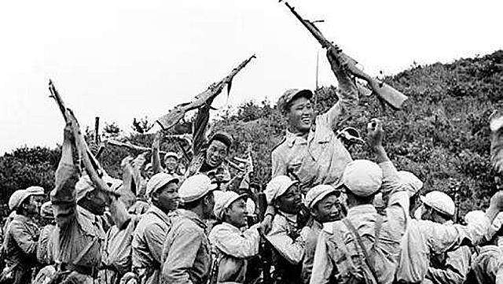

金城反击战
一锤定音，奠定和平停战！

抗美援朝战争爆发之后，彭总接连指挥了五次战役，给予敌人沉重杀伤，让世界人民看出了中国军人的实力。 在抗美援朝战争不断进行时，苏联看到中国军队不但没有败，还节节胜利，开始对中国进行大规模的军事援助， 志愿军的武器装备也得到了进一步改善，志愿军先前严重不足的火炮力量也得到了改善。上甘岭战役中，美军伤 亡上万人都没有打过攻下志愿军几个小山头，可见双方实力的微妙变化。1952年上甘岭战役结束后，美国国内反 战的声音日渐高涨，再加上志愿军武器装备的不断加强，朝鲜半岛如果再打下去，究竟鹿死谁手就很难说了。早在 1952年，迫于各方面的压力，美国政府开始寻求和中国方面进行谈判，不想再打了。但是李承晚政府却不愿意停战， 李承晚提出了一系列的无理要求，如解除北朝鲜的全部武装，中国军队全部撤出北朝鲜等，要求美军答应这些要求才 愿意停战，但当时美国根本做不到这些要求。为了给李承晚施压，美国放慢了向韩军运输补给和装备的速度，并停止 扩建最后四个韩军陆军师所需装备的装运工作。

在志愿军和联合国军进行停战谈判的时候，李承晚当局还肆意的进行破坏，进行暗杀活动，拒绝释放战犯，让志 愿军非常恼火。美国人对李承晚当局的这种要挟也非常不满，在一次谈判中，中方谈判代表团的一名英文翻译去卫生 间的时候，一名美方谈判代表也跟了过去，追随其后，然后在中方翻译的耳边说道：“总统希望早日在停战协议上签字， 但是南朝鲜不同意。”就这样，美方的态度传给了志愿军，彭总决定发动金城反击战，狠狠的教训一些南朝鲜军。1953 年7月13日晚上，1100多门火炮对金城以南的南朝鲜军发动猛烈炮击，炮火结束后，志愿军20兵团三个突击集团和九兵 团24军立刻发动进攻，一个小时突破了南朝鲜军四个师的防线。西集团军68军的两个师和54军的一个团也迅速对当面之 地发动进攻，68军203师的一位副排长率领一个团袭击了南朝鲜首都一师第一团团部，歼敌一部，打乱了该团的指挥系统， 这个团就是大名鼎鼎的白虎团，但是在志愿军的进攻下，显得不堪一击，前来志愿军的南朝鲜首都师机甲团也被歼灭，团 长被击毙。随后，志愿军开始扩大战果，稳固战线，南朝鲜军面对金城的惨败不能接受，不断的进行反击，但是不但没有 夺回失去的阵地，反而遭受了重大伤亡。金城反击战，志愿军仅仅用了数天的时间就打残了南朝鲜军的四个主力师， 歼敌5.3万人。金城一带其实是由南朝鲜军和美军共同防御，但是在此次战役开始后，美军立刻把美三师撤退到二线阵地， 该师的防御任务交给了韩六师，在李承晚向美军求援的时候，美军也只是派了少量部队进行支援，全程看着南朝鲜军被志 愿军吊打。李承晚经此一役后，再也狂不起来了，最后克拉克在停战协议上签字。